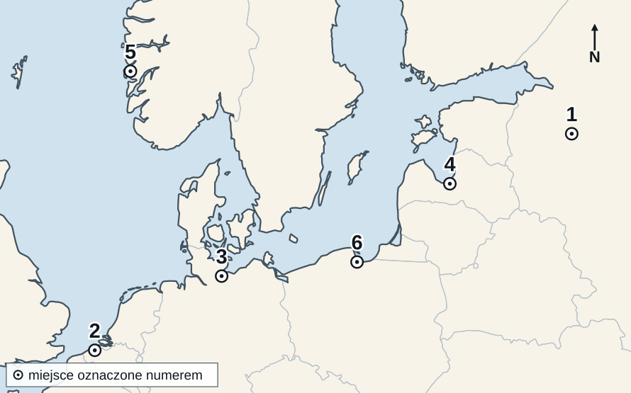
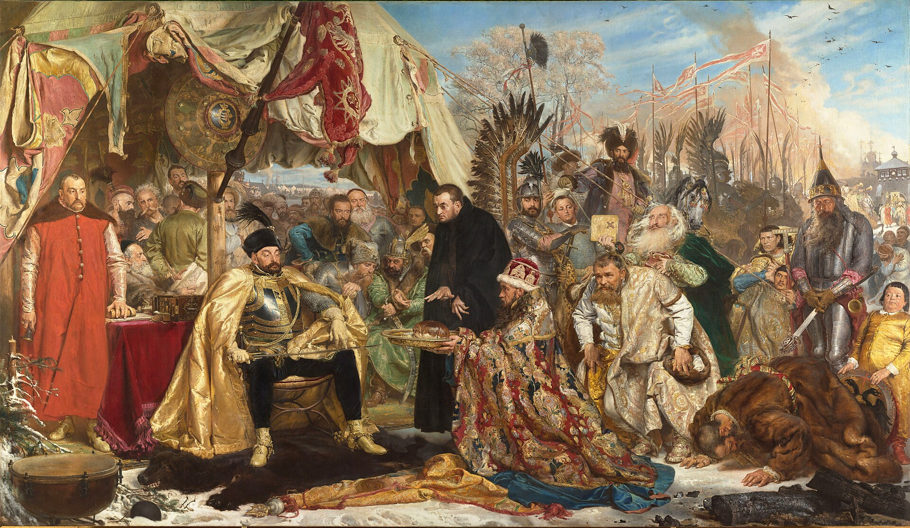

KOD UCZNIA:
Materiał autorski do ćwiczeń, opracowany na podstawie regulaminu szczegółowego oraz archiwalnych arkuszy etapu szkolnego Kujawsko-Pomorskiego Kuratora Oświaty z lat 2018/2019–2025/2026. Nie jest oficjalnym arkuszem konkursowym.
Dopasuj nazwę do opisu. Wpisz litery A–F. Jedna odpowiedź jest zbędna.
| 1. Świątynia bogini Ateny, wzniesiona na wzgórzu górującym nad Atenami. | |
| 2. Zawody sportowe ku czci Zeusa, rozgrywane co cztery lata w Olimpii. | |
| 3. Główny plac miasta greckiego, miejsce handlu i zgromadzeń obywateli. | |
| 4. Utwór dramatyczny o poważnej treści, kończący się zwykle klęską bohatera. | |
| 5. Budowla z półkolistą widownią, wznoszoną najczęściej na zboczu wzgórza. |
Oceń prawdziwość zdań. Wpisz P (prawda) albo F (fałsz).
| 1. Podstawową jednostką armii rzymskiej był legion, liczący kilka tysięcy żołnierzy. | |
| 2. Żołnierze rzymscy po zakończeniu wieloletniej służby nie otrzymywali ani żołdu, ani ziemi. | |
| 3. Rzymianie budowali utwardzone drogi, którymi wojsko mogło szybko przemieszczać się po państwie. | |
| 4. Granice cesarstwa umacniano pasem fortyfikacji i strażnic nazywanym limes. | |
| 5. Armię rzymską tworzyli wyłącznie najemnicy sprowadzani z Germanii. |
Przeczytaj tekst i wykonaj polecenia.
„Bezczynność jest wrogiem duszy. Dlatego też bracia muszą się zajmować w określonych godzinach pracą fizyczną i również w określonych godzinach czytaniem duchownym. [...] Jeśli zaś konieczność miejscowa albo ubóstwo wymagać będą, by sami zbierali plony, niech się nie smucą, bo wtedy są prawdziwymi mnichami, gdy żyją z pracy rąk swoich.”
Reguła świętego Benedykta, rozdział 48 (fragment, pisownia uwspółcześniona).
1. Podaj nazwę zakonu, którego życie porządkował ten zbiór przepisów.
2. Podaj wiek, w którym reguła ta powstała.
3. Wypisz z tekstu dwa zajęcia, na które mnisi mieli mieć wyznaczone godziny.
4. Podaj dwuwyrazowe łacińskie hasło, którym streszcza się tę zasadę życia zakonnego.
5. Wyjaśnij, jakie znaczenie dla dzisiejszej wiedzy o starożytności miała praca mnichów przepisujących księgi.
Oceń, czy podane zjawisko było przyczyną (P), czy skutkiem (S) wypraw krzyżowych.
| 1. Wezwanie papieża Urbana II na synodzie w Clermont do odzyskania Ziemi Świętej. | |
| 2. Powstanie zakonów rycerskich: templariuszy, joannitów i Krzyżaków. | |
| 3. Opanowanie Jerozolimy przez Turków seldżuckich i utrudnianie pielgrzymek do miejsc świętych. | |
| 4. Ożywienie handlu miast włoskich z krajami Bliskiego Wschodu. | |
| 5. Zdobycie i splądrowanie Konstantynopola przez uczestników czwartej wyprawy. |
Na mapie oznaczono sześć miast. Do każdego opisu dopisz właściwy numer 1–6.

Mapa bazowa: SimpleMapLab na podstawie danych Natural Earth 1:50 mln, domena publiczna (CC0); oznaczenia i opracowanie zadania: własne. Cienkie jasne linie to współczesne granice państw, naniesione wyłącznie dla ułatwienia orientacji.
| A. Miasto uznawane za główny ośrodek związku, w którym odbywały się jego zjazdy. | |
| B. Port u ujścia Wisły, w XV w. najludniejsze miasto państwa zakonnego, później największy port Rzeczypospolitej. | |
| C. Najdalej na wschód wysunięty kantor związku, w kupieckiej republice nad jeziorem Ilmen. | |
| D. Kantor w Norwegii, ośrodek handlu suszonymi rybami. | |
| E. Kantor we Flandrii, pośredniczący w handlu suknem. | |
| F. Port u ujścia Dźwiny, główne miasto Inflant. |
G. Podaj nazwę związku miast handlowych, którego dotyczy mapa.
Uporządkuj wydarzenia chronologicznie. Wpisz cyfry od 1 (najwcześniejsze) do 5 (najpóźniejsze).
| A. Zbudowanie przez Jana Gutenberga prasy drukarskiej z ruchomą czcionką. | |
| B. Zdobycie Konstantynopola przez Turków osmańskich. | |
| C. Wybuch wojny stuletniej między Anglią a Francją. | |
| D. Dotarcie wyprawy Krzysztofa Kolumba do wysp Ameryki. | |
| E. Epidemia dżumy zwanej czarną śmiercią, która ogarnęła Europę. |
Przeczytaj tekst i wykonaj polecenia.
„Iż już Królestwo Polskie i Wielkie Księstwo Litewskie jest jedno nierozdzielne i nieróżne ciało, a także nieróżna, ale jedna a spólna Rzeczpospolita, która się ze dwu państw i narodów w jeden lud zniosła i spoiła.”
Akt unii lubelskiej (fragment, pisownia uwspółcześniona).
1. Podaj rok zawarcia tej unii.
2. Podaj nazwę państwa, które na jej mocy powstało.
3. Podaj imię i przydomek króla, za którego panowania zawarto unię.
4. Wymień jeden wspólny organ lub urząd obu części tego państwa.
5. Podaj jedną dziedzinę, w której Korona i Litwa zachowały odrębność.
Dopasuj nazwę lub postać do opisu. Wpisz litery A–F. Jedna odpowiedź jest zbędna.
| 1. Obradujący w latach 1545–1563 zjazd biskupów, który wyznaczył zasady odnowy Kościoła katolickiego. | |
| 2. Zakon powołany do obrony wiary katolickiej, prowadzący szkoły i misje. | |
| 3. Spis publikacji, których katolikom nie wolno było czytać. | |
| 4. Hiszpański szlachcic i dawny żołnierz, założyciel Towarzystwa Jezusowego. | |
| 5. Sąd kościelny powołany do ścigania osób oskarżonych o herezję. |
Obejrzyj reprodukcję obrazu i wykonaj polecenia.

Jan Matejko, „Batory pod Pskowem”, 1872, Zamek Królewski w Warszawie – Muzeum; reprodukcja w domenie publicznej (Wikimedia Commons).
1. Podaj imię i nazwisko autora obrazu.
2. Siedzący w zbroi władca to Stefan Batory. Podaj nazwę księstwa, którym rządził przed objęciem tronu polskiego.
3. Podaj nazwę państwa, z którym Rzeczpospolita prowadziła przedstawioną tu wojnę o Inflanty.
4. Podaj nazwę rozejmu zawartego w 1582 r., który tę wojnę zakończył.
5. Wyjaśnij, dlaczego obraz namalowany w XIX w. nie może być traktowany jako wierny zapis wyglądu tego wydarzenia.
W zadaniach 1–5 zaznacz albo wpisz literę jednej poprawnej odpowiedzi.
| 1. Elżbieta I pochodziła z dynastii: A. Stuartów B. Tudorów C. Lancasterów D. Yorków |
|
| 2. Kościół anglikański powstał w Anglii za panowania: A. Henryka VIII B. Ryszarda III C. Jakuba I D. Karola I | |
| 3. Wielka Armada, rozbita w starciu z flotą angielską i przez sztormy, była flotą: A. Francji B. Niderlandów C. Hiszpanii D. Portugalii | |
| 4. Klęska Wielkiej Armady umocniła pozycję Anglii jako: A. cesarstwa B. państwa kościelnego C. republiki D. potęgi morskiej | |
| 5. Za panowania Elżbiety I tworzył dramatopisarz: A. Dante Alighieri B. Molier C. William Szekspir D. Miguel Cervantes |
6. Podaj rok klęski Wielkiej Armady.
Wpisz pojęcie pasujące do opisu.
| 1. Ciężka jazda polska, rozpoznawana po skrzydłach umocowanych przy siodle lub zbroi. | |
| 2. Długa broń drzewcowa, którą jeździec uderzał w pierwszym starciu. | |
| 3. Oddział jazdy będący podstawową jednostką organizacyjną wojska. | |
| 4. Wojsko zwoływane spośród szlachty, zobowiązanej stawić się konno i zbrojnie. | |
| 5. Piechota utworzona przez Stefana Batorego z chłopów z dóbr królewskich. |
Oceń prawdziwość zdań. Wpisz P (prawda) albo F (fałsz).
| 1. Rokoszem nazywano zbrojne wystąpienie szlachty przeciwko królowi. | |
| 2. Rokosz Zebrzydowskiego wybuchł przeciw planom wzmocnienia władzy królewskiej przez Zygmunta III Wazę. | |
| 3. Rokoszanie zwyciężyli w bitwie pod Guzowem i zmusili Zygmunta III do zrzeczenia się tronu. | |
| 4. Rokosz Lubomirskiego był wymierzony w plan wyboru następcy tronu za życia Jana Kazimierza. | |
| 5. Rokosze wzmacniały władzę królewską i porządkowały ustrój Rzeczypospolitej. |
Wykonaj polecenia 1–5.
| 1. Rzeka, którą spławiano zboże z głębi kraju do Gdańska. | |
| 2. Płaskodenna łódź rzeczna używana do spławiania zboża. | |
| 3. Budowla portowa służąca do przechowywania zboża przed załadunkiem na statki. | |
| 4. Gospodarstwo szlacheckie nastawione na produkcję zboża na sprzedaż, oparte na pracy pańszczyźnianej. |
5. Wyjaśnij, dlaczego rozwój eksportu zboża pogarszał położenie chłopów w Rzeczypospolitej.
Dopasuj pojęcie do opisu. Wpisz litery A–F. Jedna odpowiedź jest zbędna.
| 1. Przekonanie szlachty o pochodzeniu od starożytnych Sarmatów, kształtujące jej obyczaj i strój. | |
| 2. Wierzchni strój szlachecki z rozciętymi rękawami, noszony na żupan i przepasany pasem. | |
| 3. Ozdobna szabla, nieodłączny element ubioru szlachcica. | |
| 4. Ogół przywilejów, które szlachta uważała za podstawę ustroju Rzeczypospolitej. | |
| 5. Przymusowa, darmowa praca chłopa na gruncie pana. |
Rozwiąż krzyżówkę, a następnie wyjaśnij znaczenie hasła z zaznaczonej kolumny.
| 1. Część zbroi chroniąca głowę wojownika. |
| 2. Spis Kozaków przyjętych na żołd Rzeczypospolitej. |
| 3. Rodzaj wojska walczącego przy użyciu dział. |
| 4. Długa broń palna piechoty, ładowana od wylotu lufy. |
| 5. Broń sieczna o zakrzywionej głowni, noszona przez szlachtę. |
| 6. Polowe umocnienie usypane z ziemi. |
| 1. | ||||||||||||
| 2. | ||||||||||||
| 3. | ||||||||||||
| 4. | ||||||||||||
| 5. | ||||||||||||
| 6. |
Hasło:
Wyjaśnij, kogo określano tym słowem. (1 p.)
Uzupełnij tekst. W każdą lukę wpisz właściwe określenie.
Najwyższym organem władzy ustawodawczej Rzeczypospolitej był (1), zwoływany zwykle co dwa lata. Tworzyli go król, senat oraz (2), do której posłów wybierano na zgromadzeniach szlachty zwanych (3). Od 1652 r. sprzeciw jednego posła mógł zerwać obrady — prawo to nazywano (4). Zasadę, że król nie może ustanawiać nowych praw bez zgody szlachty, wprowadziła konstytucja (5) z 1505 r.
Wpisz pojęcie pasujące do opisu.
| 1. Duży zakład, w którym wyroby powstają ręcznie, a pracę dzieli się między robotników wykonujących pojedyncze czynności. | |
| 2. Polityka gospodarcza zalecająca popieranie wywozu towarów i ograniczanie przywozu. | |
| 3. Opłata pobierana od towarów przewożonych przez granicę państwa. | |
| 4. Spółka kupiecka, której państwo nadało wyłączne prawo handlu z określonym obszarem. | |
| 5. Wyłączne prawo do wytwarzania lub sprzedaży jakiegoś towaru. |
Wykonaj polecenia 1–5.
1. Podaj rok powołania Komisji Edukacji Narodowej.
2. Podaj nazwę zakonu, po którego kasacie Komisja przejęła majątek na utrzymanie szkół.
3. Podaj nazwę szkoły otwartej w 1765 r., kształcącej przyszłych oficerów i urzędników, kierowanej przez Adama Kazimierza Czartoryskiego.
4. Podaj nazwę zespołu powołanego przez Komisję do opracowania nowych podręczników.
5. Wyjaśnij, dlaczego powołanie Komisji Edukacji Narodowej uważa się za reformę nowatorską w skali ówczesnej Europy.
Do każdego wydarzenia dopisz właściwy rok, wybierając z ramki. Jedna data jest zbędna.
| 1. Zawiązanie konfederacji targowickiej. | |
| 2. Trzeci rozbiór Polski. | |
| 3. Pierwszy rozbiór Polski. | |
| 4. Przysięga Tadeusza Kościuszki na rynku w Krakowie. | |
| 5. Uchwalenie Konstytucji 3 maja. |
Kod ucznia:
| Zadanie | Odpowiedzi | Punkty |
|---|---|---|
| I. Kultura Greków | 1 …… 2 …… 3 …… 4 …… 5 …… | |
| II. Armia rzymska | 1 …… 2 …… 3 …… 4 …… 5 …… | |
| III. Reguła św. Benedykta | ||
| IV. Wyprawy krzyżowe | 1 …… 2 …… 3 …… 4 …… 5 …… | |
| V. Hanza (mapa) | A …… B …… C …… D …… E …… F …… G …… | |
| VI. Chronologia XIV–XV w. | A …… B …… C …… D …… E …… | |
| VII. Akt unii lubelskiej | ||
| VIII. Kościół wobec reformacji | 1 …… 2 …… 3 …… 4 …… 5 …… | |
| IX. Obraz jako źródło | ||
| X. Anglia Elżbiety I | 1 …… 2 …… 3 …… 4 …… 5 …… 6 …… | |
| XI. Wojsko Rzeczypospolitej | ||
| XII. Rokosze szlacheckie | 1 …… 2 …… 3 …… 4 …… 5 …… | |
| XIII. Gdańsk i handel zbożem | ||
| XIV. Sarmatyzm | 1 …… 2 …… 3 …… 4 …… 5 …… | |
| XV. Krzyżówka | ||
| XVI. Sejm Rzeczypospolitej | ||
| XVII. Gospodarka nowożytna | ||
| XVIII. Reformy stanisławowskie | ||
| XIX. Upadek Rzeczypospolitej | 1 …… 2 …… 3 …… 4 …… 5 …… | |
| Razem | / 100 |